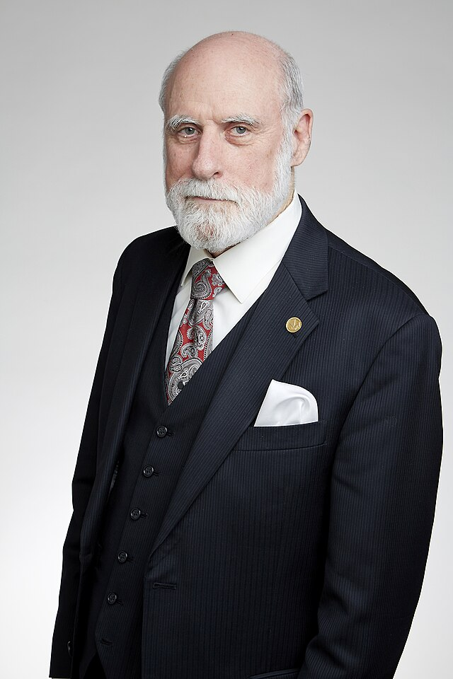
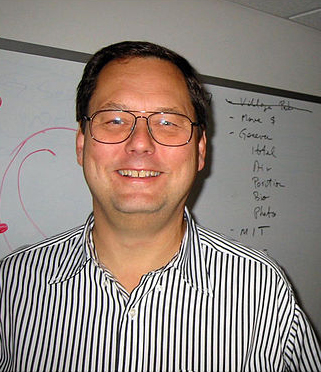
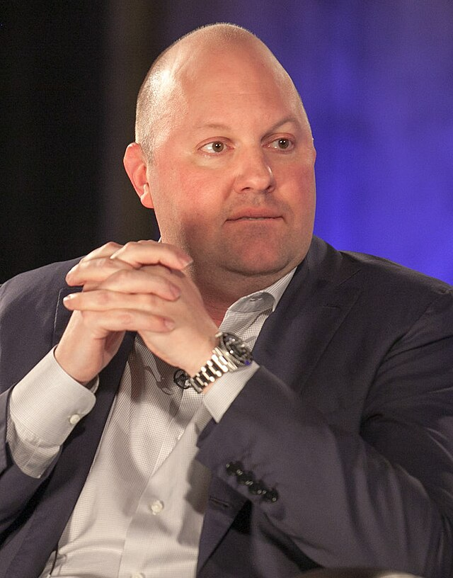
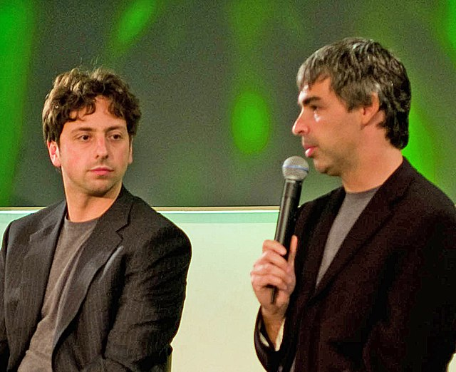
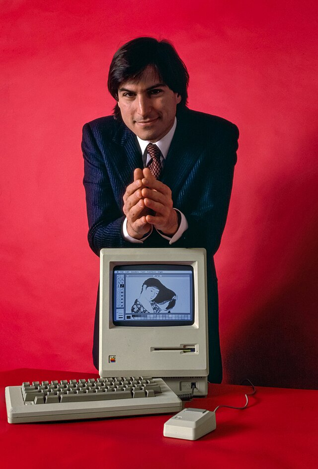

From a four-node military experiment in 1969 to a network connecting 5.4 billion people — the internet is the most transformative infrastructure ever built. This is the story of packets, protocols, browsers, platforms, and the ongoing battle for who controls it all.
Long before anyone called it "the internet," a handful of researchers at DARPA, Bell Labs, and a dozen universities were solving a deceptively simple problem: how do you keep a communications network alive when parts of it are destroyed? The answer — packet switching — would change everything.
The Soviet satellite shocks America into action. President Eisenhower creates DARPA to ensure U.S. technological supremacy. The agency will go on to fund almost every foundational internet technology.
OriginLeonard Kleinrock, Paul Baran, and Donald Davies independently propose that communication networks could route data in small packets rather than dedicated circuits. The entire internet still works this way.
TheoryCharley Kline at UCLA sends the first message across ARPANET to SRI in Menlo Park. The system crashes after two letters. The internet's first message was, accidentally, "LO" — as in, lo and behold.
MilestoneRay Tomlinson sends the first networked email and chooses the @ symbol to denote user@host addressing. Within two years, 75% of all ARPANET traffic is email — the network's killer app, decades before that phrase existed.
ProtocolVint Cerf and Bob Kahn publish the TCP specification in 1974. On January 1, 1983, ARPANET switches to TCP/IP. Any computer, anywhere, can now join the same network. The modern internet is born.
InfrastructurePaul Mockapetris invents the Domain Name System, translating human-readable names (mit.edu) into IP addresses. DNS becomes one of the most critical — and attacked — pieces of internet infrastructure.
InfrastructureThe web began as a document-sharing system for physicists. Within a decade it had become the biggest library, marketplace, and publishing platform in human history. This era ended with a spectacular crash — but everything built after stood on its rubble.
A physicist at CERN proposes a hypertext system for sharing documents. He builds HTML, HTTP, and the URL — and puts them in the public domain. The first website explains what the web is. It is still online.
FoundationThe US National Science Foundation lifts restrictions on commercial use of the internet backbone. Suddenly, any company can use the network. Within months, the first commercial ISPs appear.
PolicyMarc Andreessen and Eric Bina release Mosaic at the University of Illinois. The first browser to show images and text together transforms the web from academic curiosity to consumer phenomenon. Downloads: 2 million in the first year.
BrowserAmerica Online floods mailboxes across America with free trial CDs. At peak, AOL was the largest internet company in the world — 30 million subscribers behind walled gardens, buddy lists, and the scream of a 56k modem.
ConsumerPizza Hut takes the first online order. Amazon launches as 'Earth's Biggest Bookstore.' eBay makes strangers into trading partners. SSL encryption, introduced by Netscape, makes credit cards on the internet feel (somewhat) safe.
CommerceVenture capital floods the internet. Companies with no revenue go public and achieve billion-dollar valuations. 'Eyeballs' replace earnings as the metric. The NASDAQ crashes 78% from its peak, wiping out trillions — and clearing the field for the companies that survived.
CrashBroadband killed the modem screech. The surviving companies rebuilt the web on a new principle: users aren't just readers — they're writers, creators, and the product. Social networks, user-generated content, and search advertising became trillion-dollar industries. Web 2.0 rewired culture.
Jimmy Wales and Larry Sanger launch Wikipedia as an experimental side project. Volunteers write, edit, and police 60 million articles across 320 languages — proving that open collaboration at internet scale could build something magnificent.
KnowledgeAdWords launches in 2000 with 350 customers. By 2004, Google's IPO values the company at $23 billion. The core insight: intent signals in a search box are worth more than any other form of advertising.
RevenueA college social directory becomes the largest social network in history. Facebook introduces the News Feed in 2006, the Like button in 2009, and a surveillance capitalism model that vacuums up behavioral data to sell targeted advertising.
SocialThree former PayPal employees build YouTube in a garage. 'Me at the zoo' is the first upload. Within a year, 100 million videos stream daily. Google buys it for $1.65 billion. Broadcast television will never fully recover.
VideoAmazon launches S3 and EC2, renting computing and storage by the hour. Netflix, Airbnb, and millions of startups will be built on top of it. The cloud means no one needs to own servers anymore — and Amazon quietly becomes the infrastructure of the internet.
InfrastructureJack Dorsey, Ev Williams, Biz Stone, and Noah Glass launch a micro-blogging service. 140 characters becomes the unit of public thought. From Arab Spring to presidential announcements, Twitter rewires how news flows.
SocialThe internet escaped the desktop. A single product announcement in January 2007 put a supercomputer in every pocket — and with it, always-on connectivity, GPS, cameras, and app stores. The internet became ambient. Mobile traffic surpassed desktop in 2016 and never looked back.
Steve Jobs introduces a phone with a full web browser, touchscreen, and no keyboard. Safari shows real web pages, not watered-down mobile versions. The mobile internet era begins. Two billion iPhones will be sold over the next 17 years.
HardwareGoogle's open-source mobile OS launches on the HTC Dream. By giving Android away for free, Google ensures search and advertising follow users to mobile. Android now commands 72% of the global smartphone market.
PlatformApple's App Store and Google Play create new platform economics. The smartphone becomes a portal to millions of applications. By 2024, the App Store alone has processed over $1.7 trillion in developer billings. A new industry emerges: mobile app development.
MarketplaceInstagram launches in October 2010 and reaches 1 million users in two months. Photography becomes a social language. Facebook acquires it for $1 billion — its first major acquisition. The filter becomes a cultural artifact of the era.
SocialWhatsApp, iMessage, WeChat, and Snapchat fragment communication into private channels. SMS usage peaks and begins its long decline. Facebook buys WhatsApp for $19 billion. The private internet grows larger than the public one.
MessagingUber, Airbnb, Lyft, and TaskRabbit use mobile connectivity, GPS, and digital payments to unlock idle assets. 'Platform economy' enters the lexicon. Decades-old industries — taxis, hotels — are disrupted by apps with no physical infrastructure.
EconomyFive companies — Google, Apple, Facebook, Amazon, and Microsoft — achieved a concentration of digital power without historical precedent. As platforms devoured attention and commerce, regulators began to push back. The internet's founding promise of decentralization came under serious strain.
Edward Snowden leaks classified NSA documents revealing mass internet surveillance. PRISM accessed data from all major tech companies. The revelations accelerate encrypted communications adoption and permanently alter trust in internet infrastructure.
PrivacyNetflix, then Hulu, Disney+, HBO Max, and dozens more replace network television. 'Cord-cutting' accelerates. By 2020, streaming surpasses cable for the first time. Content becomes a platform war. Billions are spent on original programming.
MediaEurope's General Data Protection Regulation takes effect, giving users rights over their data and fining companies up to 4% of global revenue for violations. A global cascade of privacy legislation follows. The era of consequence-free data harvesting ends.
RegulationByteDance's TikTok reaches 1 billion users faster than any platform in history. Its recommendation algorithm, optimized purely for engagement, renders the social graph irrelevant — you don't need to follow anyone for the feed to know exactly what you want.
AlgorithmGlobal regulators open investigations into Big Tech. The EU fines Google €8 billion over a decade. The US Congress grills tech CEOs. Australia passes a news bargaining law. The question of who controls the internet shifts from technical to political.
RegulationGlobal lockdowns move work, school, healthcare, and social life online simultaneously. Zoom becomes the most downloaded app in history. Remote work becomes normalized. The internet proves it can bear the weight of civilization — barely.
SocietyThe internet that trained large language models is now being reshaped by them. Search is fragmenting. Social platforms are fighting bot-generated content. The question of whether a human wrote something — or what a human even is online — has become genuinely complex. The next internet is being written now.
OpenAI releases ChatGPT. 1 million users in five days. 100 million in two months. Every internet company announces an AI strategy. Search, once Google's unchallenged domain, faces its first existential challenger in two decades.
AIMicrosoft integrates GPT-4 into Bing, forcing Google to rush its own AI search features. Perplexity, Anthropic, and others offer AI-first search. The link — the fundamental building block of the web for 30 years — is being bypassed by synthesized answers.
SearchTwitter's acquisition and transformation into X, Meta's Threads, Bluesky, and Mastodon fragment the public square. ActivityPub enables a federated web of interoperable social networks. The dream of a decentralized social internet flickers back to life.
SocialSpaceX's Starlink constellation covers the entire globe with low-latency broadband. The last 2.7 billion people without reliable internet access come into reach. The infrastructure layer of the internet moves into orbit.
InfrastructureThe EU AI Act passes. Digital Markets Acts reshape app store economics. Countries globally assert sovereignty over data flows. The open global internet fragments into regulatory zones — a 'splinternet' shaped by law, not just technology.
PolicyHTTP/3, WebTransport, QUIC, post-quantum TLS, and decentralized identity standards are being written and deployed right now. The internet is not a finished thing — it is a living protocol stack, continuously rewritten by tens of thousands of engineers working in public.
ProtocolThe internet's next chapter will be written in the intersection of physical and digital — spatial computing, ambient AI, post-quantum cryptography, and the ongoing question of who owns the infrastructure.
AR glasses and spatial interfaces dissolve the boundary between screen and world. Apple Vision Pro, Meta's Orion, and dozens of startups are racing to make the headset the next platform shift.
Quantum computers threaten the cryptographic foundations of the internet. NIST finalized post-quantum encryption standards in 2024. The migration of billions of endpoints to new cryptography is underway — quietly, urgently.
AI that can browse, code, transact, and communicate autonomously will change who — or what — is using the internet. The web may increasingly be navigated by agents on behalf of humans, rewriting assumptions about interfaces and content.
ActivityPub, AT Protocol, and decentralized identity standards are building interoperable alternatives to walled gardens. The federated social web is small today — but it carries the original spirit of the internet's open architecture.
RAND Corporation engineer who, in 1964, proposed breaking messages into blocks to survive nuclear attacks. His distributed network concept is the structural DNA of every packet sent today.
Wikipedia
Co-authored TCP/IP with Bob Kahn in 1974 — the universal language that allows any computer to talk to any other. Widely called the Father of the Internet. Later became Google's Chief Internet Evangelist.
WikipediaDARPA program manager who partnered with Cerf to design TCP/IP. Also conceived the National Information Infrastructure and helped create CNRI. Shared the Turing Award with Cerf in 2004.
WikipediaCERN physicist who invented HTML, HTTP, and URLs in 1989 — then gave them to the world for free. Founded the W3C to steward web standards. Now leads the fight for a free and open web via the Web Foundation.
Wikipedia
Designed the Domain Name System in 1983, replacing a single text file with a distributed, scalable hierarchy. Without DNS, the web would be a network of impossible-to-remember numbers. Every URL owes him a debt.
Wikipedia
Built Mosaic at 22 — the first browser to display images inline with text — then co-founded Netscape and triggered the dot-com era. Later co-founded Andreessen Horowitz, funding the next generation of internet companies.
WikipediaLaunched Amazon as an online bookstore in 1994 and scaled it to reshape global retail. Then built AWS — almost by accident — which became the hidden foundation on which most of the modern internet runs.
Wikipedia
Stanford PhD students who built BackRub — later Google — in 1996. PageRank transformed how humanity navigates information. Google's search advertising model, pioneered in 2000, became the economic engine of the entire internet.
WikipediaBuilt Facebook from a Harvard dorm in 2004. The social graph — connecting 3 billion people — redefined identity on the internet. Meta's advertising empire and its role in spreading misinformation reshaped democracies worldwide.
Wikipedia
The iPhone announcement on January 9, 2007, put the full internet in every pocket. Jobs insisted on a real web browser — not a 'mobile web.' That insistence triggered a platform shift that moved more than half of all internet traffic to mobile within a decade.
WikipediaCo-founded Wikipedia in 2001 as a side project and watched it become the world's largest encyclopedia — written by volunteers, free of charge, in 320 languages. One of the few internet idealists whose vision actually came true.
WikipediaNSA contractor who in 2013 revealed the scale of mass internet surveillance — PRISM, XKeyscore, bulk phone records collection. His leaks permanently altered the politics of internet privacy, encryption adoption, and trust in digital infrastructure.
Wikipedia